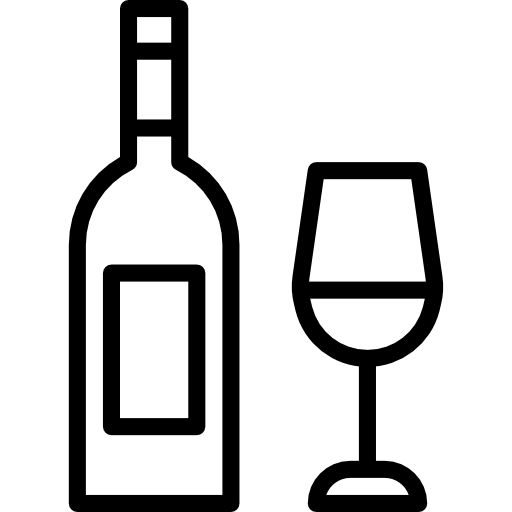

+5°C
Velkommen til ferieparadiset Danmark
Sådan fordeler temperaturudviklingen sig i Danmark
13,45°
8,45°
 I Esbjerg er det nu muligt at fange hajer, ansjoser tun og sværdfisk som nu trives i de danske farvande
I Esbjerg er det nu muligt at fange hajer, ansjoser tun og sværdfisk som nu trives i de danske farvande
Livet som vinbonde bliver særligt rentabelt. Nyborg bliver det nye bourdeaux, da druehøsten bliver fænomenal
 Randers regnskov kan nu udvide udendørs da flere subtropiske dyr nu kan overleve i det fri
Randers regnskov kan nu udvide udendørs da flere subtropiske dyr nu kan overleve i det fri
Palmestranden i Frederikshavn er kåret til Danmarks ældste, da palmerne nu kan overleve vinteren afdækket
Find din egen kommune og se hvor varmt der bliver i dit lokalområde
13,45°
8,45°
Konsevenserne ved +5°C ude i verden
I Esbjerg er det nu muligt at fange hajer, ansjoser, tun og sværdfisk som nu trives i de danske farvande
5 milliarder mennesker kommer til at bo i områder med vandmangel
Livet som vinbonde bliver særligt rentabelt. Nyborg er det nye bourdeaux, da druehøsten bliver fænomenal
En tredjedel af fødevareproduktionen forventes at forsvinde
Randers regnskov kan nu udvide udendørs da flere subtropiske dyr nu kan overleve i det fri
Dødbringende hedebølger vil udgøre en trussel for over 60% af verdensbefolkningen
Palmestranden i Frederikshavn er kåret til Danmarks ældste, da palmerne nu kan overleve vinteren afdækket
Cirka 1/5 af klodens befolkning, bliver flygtninge, da deres hjemlande bliver for varme i sommermånederne
Formindsk DIT klimaaftryk nu!
_______________________________________________________